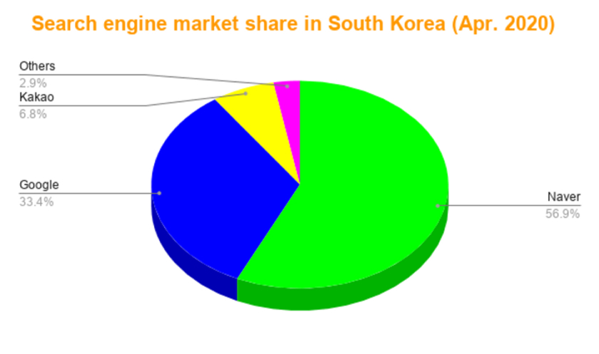
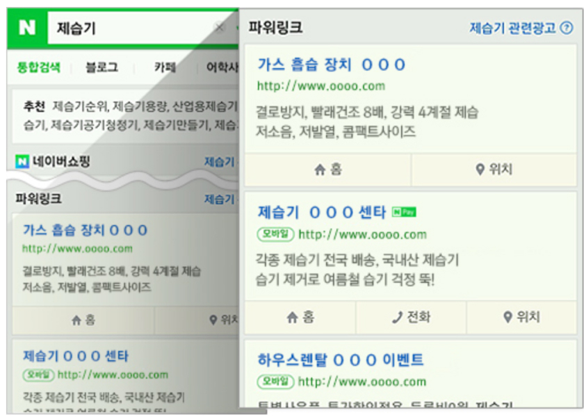
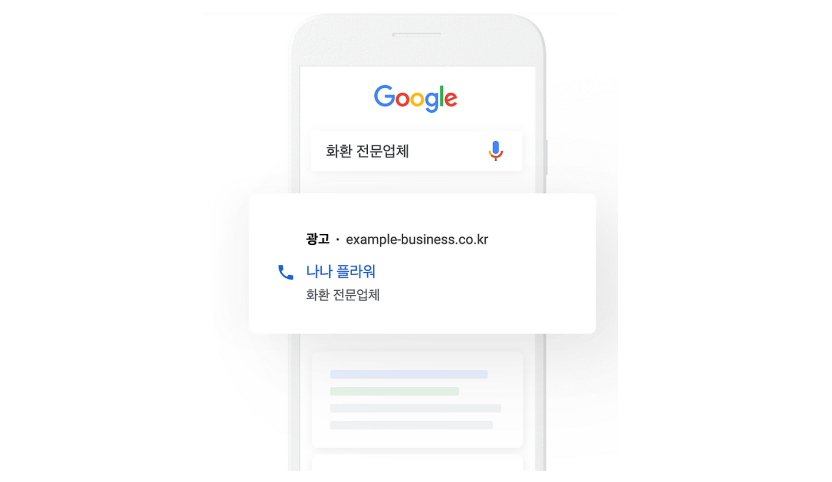
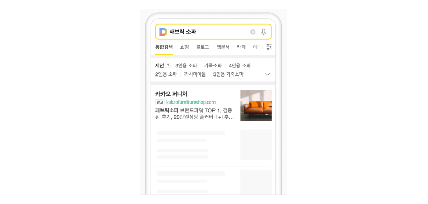
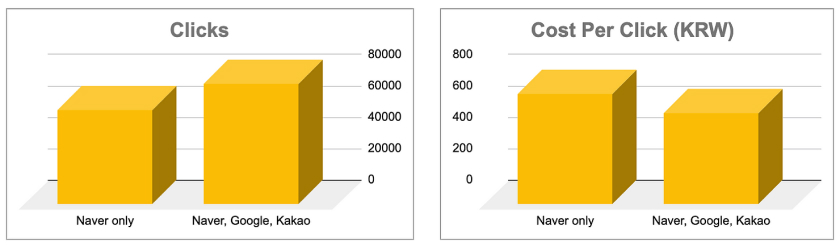
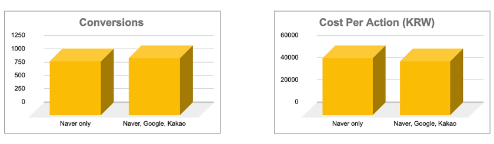

So, you have built your website in the Korean Language with the best local user interface practices in mind. And, your next step is to acquire quality traffic (and leads) from the most relevant target audience of your brand and ultimately grow your business in South Korea.
There are a number of ways such as social media marketing, referrals, affiliate marketing, etc, to drive the quality traffic and acquire customers for your business. However, 2 of the main and most effective methods to acquire the quality traffic are:
SEO (Search Engine Optimization): The best way to drive organic traffic from Google (mainly) and other search engines. SEO takes time from several weeks to several months based on your strategically optimized keywords, contents, and website performance, etc,.
Search Ads: Search Ads are the fastest way to drive quality traffic and lead from the most relevant customers at the right time with the right message. Unlike SEO, Search Ads bring you paid traffic from the search engine and portal site market leaders in South Korea.
Now, let us learn about 3 main things that are important factors to run successful search ad campaigns in the South Korean market.
1. Naver, Google and Kakao.
Naver, Google, and Kakao (Daum)! These are the main players in the South Korean search engine market. As of April, 2020, Naver is leading the South Korean search engine market with a 57% market share followed by Google and Kakao (Daum).
Naver, Google, and Kakao (Daum) search ads help each business to accomplish following marketing goals by attracting the customers who are actively searching for your product or brand category online:
Drive traffic to your website;
Drive leads (newsletter sign-ups, product demo request, consultation request, etc,.)
Increase online or in-store sales;
Each search engine (and portal site) has its own various search ad products. And each search ad product of search engines has different CPC (Cost Per Click) based on keywords, industry, and competition, etc,.
Naver Search Ad products include Site Search Ads (Powerlink), Naver Shopping Search Ads, Naver Content Search Ads, Naver Brand Search Ads, Location Based Search Ads and Click Choice Search Ads. Learn more about each product of Naver Search Ads here.
Google Search Ads. Google has been gaining a bigger market share in South Korea since 2016. Google grew its market share from just 2% in 2016 to 33% in 2020 in the South Korean search engine market. More Koreans are now searching on Google thanks to Google's super relevant and helpful search results on its SERP (Search Engine Result Page). More businesses in South Korea are now allocating a bigger budget to run Google Search Ads.
Kakao Search Ads can be displayed on the KakaoTalk messenger SERP and Daum portal site. Kakao Search Ads products include Kakao search ads, Kakao Shopping Search Ads, Kakao Image Search Ads (for fashion brands only). Learn more about each product of Kakao Ads here.
2. It is important to plan an optimal media mix.
Naver is the No.1 search engine & portal site in South Korea. But, would it be enough to run a search ad campaign on Naver only? Or should you mix all 3 main players (Naver, Google, and Kakao) to achieve your KPI (Key Performance Indicator), the best ROAS (Return on Ad Spend) or ROI (Return on Investment)? Whatever your goal is, it is important to mix and leverage all three search engines for search ad campaigns to reach a bigger audience in different demographic characteristics with lower CPC (Cost Per Click) by making synergy among Naver, Google, and Kakao.
Let us take a look at the following actual A/B test campaign results. The A/B test has been run to compare a single media campaign (Search ad campaign on Naver only) vs. media mix campaign (Search ad campaign on Naver, Google, and Kakao).
• Campaign Goal: Drive leads (consultation requests).
• The search ad campaign run on Naver achieved 60,000 clicks with an average KRW 700 CPC.
• The search ad campaign runs on Naver, Google, and Kakao together achieved 77,000 clicks with average KRW 579 CPC.
• The search ad campaign run on Naver, Google and Kakao together achieved 17,000 more clicks and the average CPC was down by KRW 121.
• The search ad campaign run on Naver only achieved 1,000 conversions (leads) with average KRW 51,082 CPA.
• The search ad campaign runs on Naver, Google, and Kakao together achieved 1,061 conversions (leads) with average KRW 48,192 CPA.
• The search ad run on Naver, Google, and Kakao together achieved 61 more conversions (leads) and the average CPA was down by KRW 2,890.
3. Your landing page should assist your customers seamlessly.
So, your potential customers discovered you thanks to your strategically executed search ad at the right moment with the right call to action, and they clicked your ad. The web page, which your potential customers visit right after clicking your search ad, is called a landing page.
An ideal landing page should include following factors in order to achieve search ad campaign goals and reduce bounce rate (the percentage of visitors to a particular website who navigate away from the site after viewing only one page):
- Korean language;
- Easy to navigate;
- Mobile-friendly;
- Fast page loading time;
- Sufficient product content;
'Test my site' is a great tool of Google to examine your website's performance. This tool can help you find a mobile website's speed with practical recommendations to make your website mobile-friendly.
Learn more about the popular South Korean search ad products here.